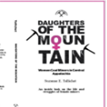
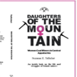

These book covers were designed for a collection of books in the West Virginia University's Regional History Center in their downtown library. The books are about the roles women had in Appalachia and how they functioned in daily life during the mining period.
 
